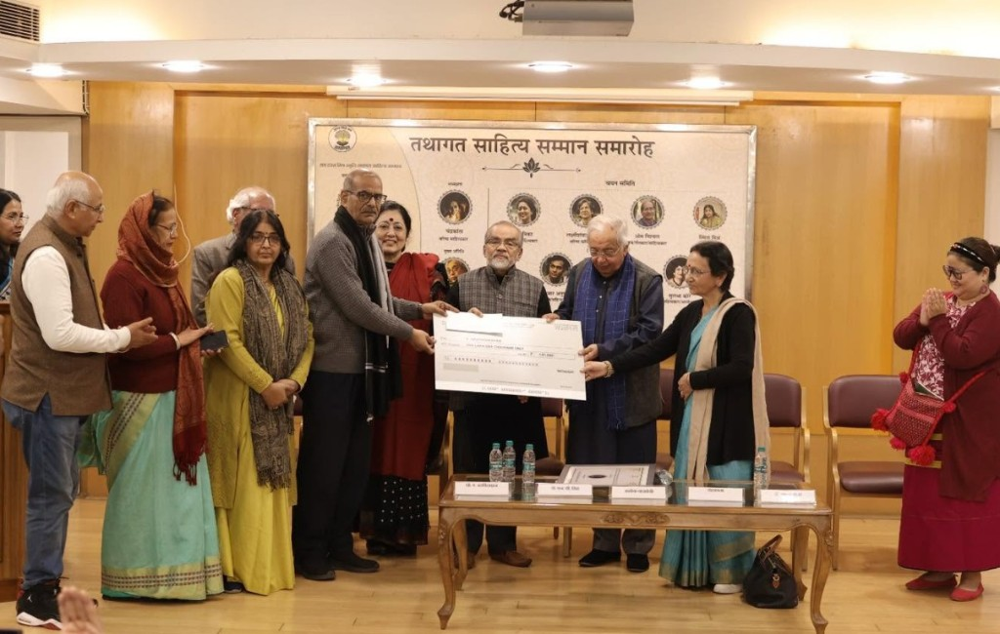
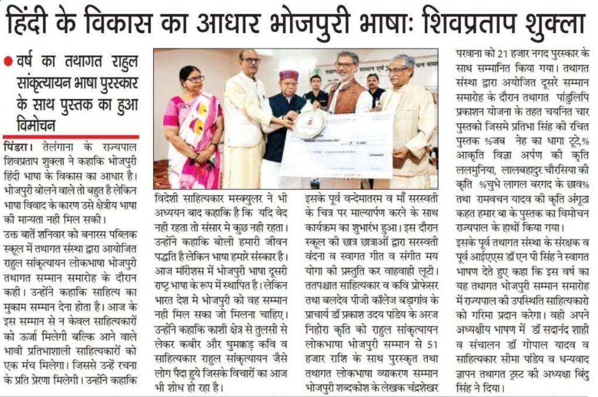
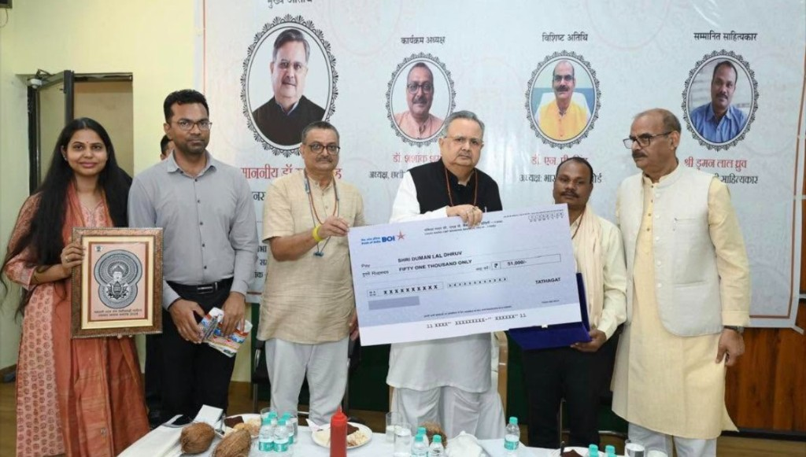

Celebrating Literature | Preserving Languages | Honouring Excellence
Tathagat Trust as a national literary institution, guided by patron Dr. N.P. Singh, working to foster language/cultural dialogue and promote Indian knowledge tradition through regional languages.
The three Tathagat Samman

Photo: Sahitya Akademi Auditorium, New Delhi, 24 Jan 2026
Hindi
Prof. Ramdarsh Mishra Smriti Tathagat Samman (Hindi)
In memory of Prof. Ramdarsh Mishra (1924–2025): Gorakhpur-born, 70+ year career, 150+ books (32 poetry collections, 30 short-story collections, 15 novels), Delhi University professor, Sahitya Akademi Award (2015), Vyas Samman (2011), Saraswati Samman (2021), Padma Shri (2025).
Categories: Tathagat Sahitya Samman; Tathagat Yuva Sahitya Samman
Eligible genres: Poetry, Short Stories, Novels (2020–2025); for writers from non-Hindi-speaking regions
Award value: ₹1,01,000 + shawl + citation + memento
Recent ceremony: New Delhi, 24 Jan 2026, Sahitya Akademi Auditorium
Awardees
Prof. A. Aravindakshan (Kerala) for Dhadkanon Ke Bhitar Jaakar
Jamuna Bini (Arunachal Pradesh) for Jab Aadivasi Gaata Hai

Photo: Barji Village, Varanasi
Bhojpuri
Rahul Sankrityayan Lokbhasha Bhojpuri Tathagat Samman
Named after Mahapandit Rahul Sankrityayan (1893–1963, born Kedarnath Pandey, Azamgarh) — "father of Hindi travel literature," ~30 languages known, 100+ books, author of Volga Se Ganga.
Eligible genres: Poetry, Short Stories, Novels (2020–2025)
Award value: ₹51,000 + shawl + citation + memento
Recent ceremony: Barji Village, Varanasi; Chief Guest: Shivpratap Shukla, Governor of Telangana
Main awardee
Prakash Uday for Araj-Nihora
Special Recognition
Chandreshwar 'Parwana' (₹21,000 + angavastram + memento) for the Bhojpuri–Hindi Dictionary
Book Launches (Manuscript Publication Scheme)
Chubhe Laagal Bargat Ke Chhaon
Lal Bahadur Chaurasia 'Lal'
Lalmunia
Aakriti Vigya 'Arpan'
Angutha Katat Hamar Ba
Ram Bachan Yadav
Jab Neh Ke Dhaga Tutela
Pratibha Singh

Photo: Raipur, Chhattisgarh
Chhattisgarhi
Bhagwati Lal Sen Lokbhasha Chhattisgarhi Tathagat Samman
Named after Bhagwati Lal Sen (1930–1981, Dhamtari) — key works Dekh Re Aankhi Sun Re Kaan, Nadiya Mare Piyas.
Eligible genres: Poetry, Stories, Novels, Plays
Award value: ₹51,000 + shawl + citation + memento
Recent ceremony: Raipur, Chhattisgarh; Chief Guest: Dr. Raman Singh, Speaker, Chhattisgarh Legislative Assembly; Special Guest: Dr. N.P. Singh
Awardee
Shri Dumanlal Dhruv (plus 16 other litterateurs/committee members honoured)
The ground beneath the honours
Key Impact Metrics
Mainstream Integration
Over 2,000 youth from conflict-affected or historically marginalized tribal backgrounds have moved into formal manufacturing jobs (including with Maruti Suzuki), police officers, nurses, teachers, lawyers, senior corporate executives, and bank officers.
Higher Education Access
First-generation scholars are breaking social barriers to study at top-tier central universities like Delhi University, and to prepare for the civil services.
Women's Economic Freedom
Grassroots self-help groups have enabled rural and tribal women to move away from illicit trades and earn stable seasonal incomes of ₹50,000–₹60,000 through micro-enterprises.
Regional Stability
Over a decade of structured youth engagement has helped replace regional unrest, extremism, and crime with sustainable livelihoods, education, and professional sports opportunities.
How honours are given
Selection Process & Future Vision
All awards decided by independent expert committees, transparent merit-based review. Trust's plan to expand honours to more regional/folk/indigenous languages.